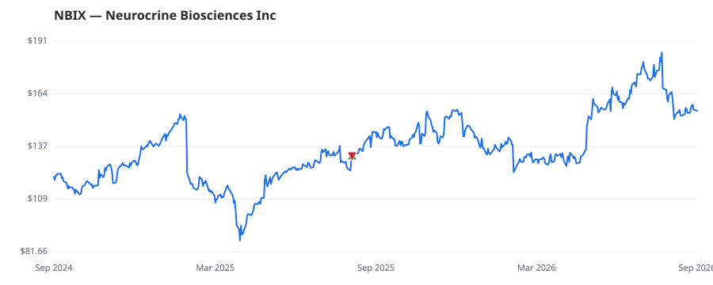

bullish · bearish · n/a — dots: price>SMA10 · SMA10>SMA50 · SMA50>SMA200 · up>down volume (20d)
Pharmaceuticals & Biotech · large cap · ★ 1 buyer(s) sit on a committee that regulates this industry
Members who bought NBIX earned a dollar-weighted +18.2% from their disclosure dates, versus +19.4% for the S&P 500 over the same holding windows (-1.2% alpha).

▲ green = a disclosed purchase · ▼ red = a disclosed sale (plotted on disclosure date)
Neurocrine Biosciences Inc is a biopharmaceutical firm focused on the research, development, and commercialization of treatments for neurological, psychiatric, endocrine, and immunological disorders. Its portfolio includes therapies for conditions such as tardive dyskinesia, chorea associated with Huntington's disease, classic congenital adrenal hyperplasia due to 21-hydroxylase deficiency, and treatments for endometriosis and uterine fibroids. The company also maintains a pipeline of drug candidates in various stages of clinical and preclinical development across its therapeutic areas, includ BIOLOGICAL PRODUCTS, (NO DIAGNOSTIC SUBSTANCES) · website
| Revenue | $2.9B | Net income | $478.6M |
|---|---|---|---|
| Operating income | $619.1M | Diluted EPS | $4.67 |
| Assets | $4.6B | Equity | $3.3B |
| Member | Chamber | Out-performer | Disclosed buys $ | Return on buys |
|---|---|---|---|---|
| Lisa McClain ★ | house | — | $8K | +18.2% |
Disclosed $ figures are bracket midpoints — filings report ranges (e.g. $1,001–$15,000), not exact amounts.
🛒 Newly buying: Nearwater Capital Markets, Ltd (+12%, 0.5% of book)
| Fund | Fund alpha vs SPY | Position | % of book |
|---|---|---|---|
| PKO BP BANKOWY Universal Pension Society JSC | +59% | $29M | 8.2% |
| Nearwater Capital Markets, Ltd | +12% | $26M | 0.5% |
Hedge data: SEC EDGAR 13F · ranked funds beat SPY in >50% of their quarters · fund alpha = mirror-portfolio return minus SPY.